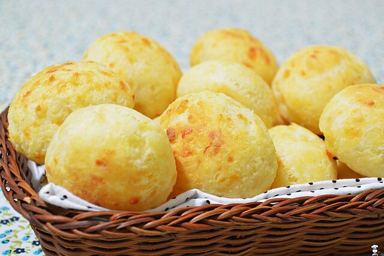

COMIDAS TÍPICAS DE LATINOAMERICA

BRASIL
Introducción
La gastronomía brasileña es un reflejo vibrante de la diversidad cultural y geográfica del país. Con una rica mezcla de influencias indígenas, africanas y europeas, los platos típicos de Brasil son tan variados como su paisaje. Se caracteriza por la diversidad regional, el uso de ingredientes locales, sabor, textura, sus platos sociales y sobre todo su influencia de la cultura.
Tipos de comidas
Tipos |
Lista |
Imagen |
|---|---|---|
Desayunos |
Pão de queijo |  |
| Tapioca | ||
Almuerzos |
Feijoada |  |
| Moqueca | ||
| Feijão Tropeiro | ||
Aperitivos |
Kibe | |
| Pastel | ||
| Coxinha | ||
| Postres | Pudim | |
| Quindim | ||
| Beijihno | ||
Bebidas |
Caipirinha | |
| Guaraná |
Ciudad con más importancia en la gastronomia de Brasil
© 2024 Todos los derechos reservados, INSTPECAM - Cesar, Colombia